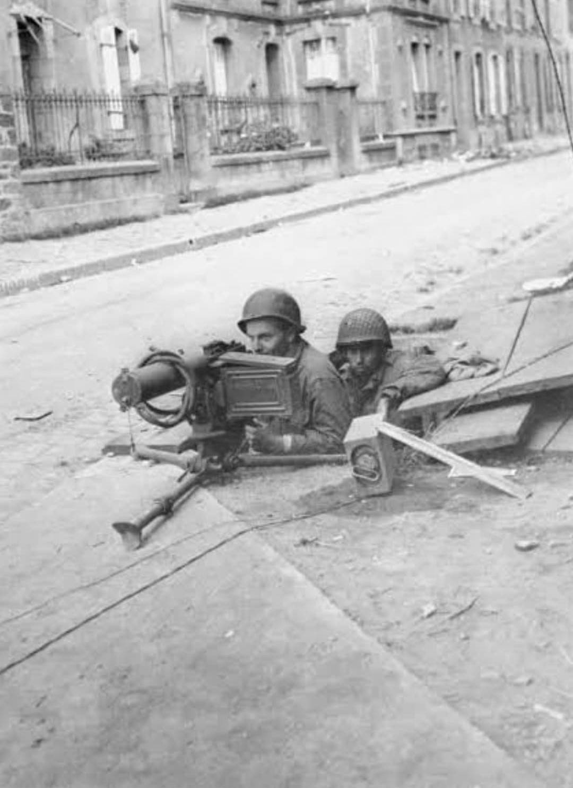
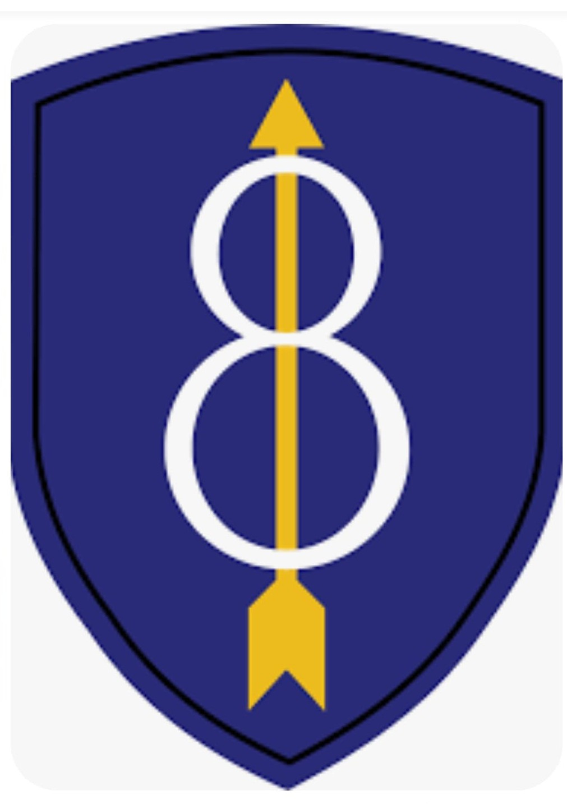
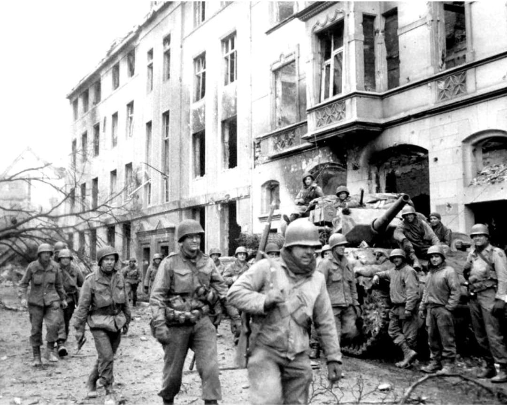
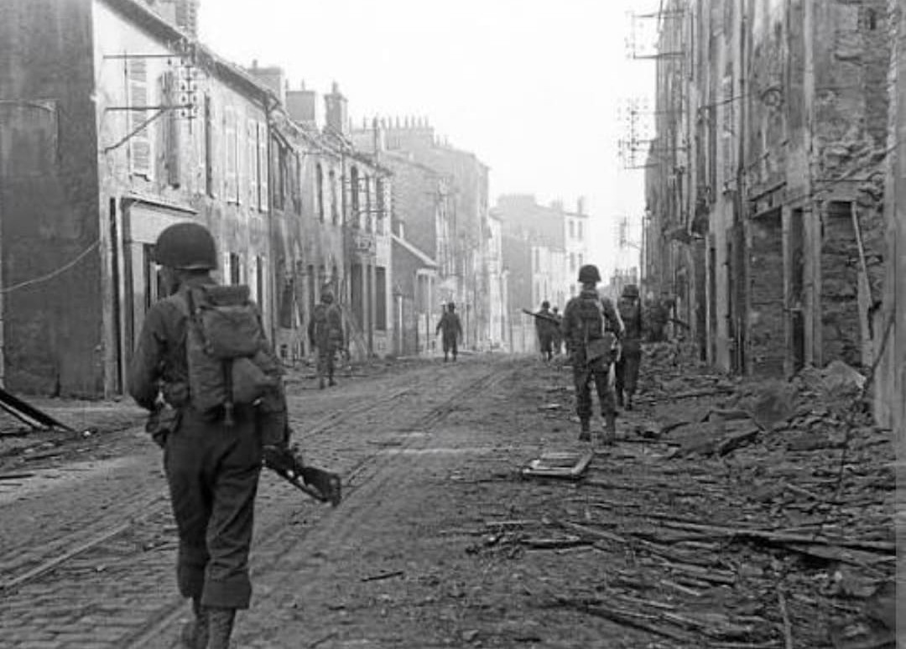

Des haies sanglantes de Normandie aux combats acharnés de Brest et de la forêt de Hürtgen

La 8th Infantry Division de l'armée américaine, surnommée les “Pathfinders” ou “Golden Arrow Division”, a joué un rôle déterminant dans la campagne de libération de l'Europe de l'Ouest durant la Seconde Guerre mondiale.
Débarquée début juillet 1944 sur la plage d'Utah Beach, la division s'est illustrée lors des durs combats du bocage normand, au siège destructeur du port fortifié de **Brest**, ainsi que dans le sanglant enfer végétal de la **forêt de Hürtgen**.
Créée en janvier 1918 pendant la Première Guerre mondiale, la division adopte pour insigne un écusson octogonal bleu portant une **flèche d'or** pointée vers le haut, entrelacée avec le chiffre 8. La flèche dorée symbolise le surnom Golden Arrow et le rôle de pionniers (Pathfinders) guidant la voie vers la victoire.
Réactivée en novembre 1940 au Camp Jackson, la division effectue un entraînement intensif aux États-Unis et en Irlande du Nord sous le commandement du général **Donald A. Stroh**.

La 8th Infantry Division débarque sur Utah Beach le 4 juillet 1944. Intégrée au VIIIe Corps américain, elle est projetée dans la sanglante bataille du bocage au sud de Carentan et de La Haye-du-Puits.
Affrontant une défense allemande tenace retranchée derrière des haies centenaires, la division subit de lourdes pertes pour nettoyer la zone du Ay et percer vers la ville de Rennes fin juillet 1944.

Après la percée d'Avranches, la 8th Division bifurque vers l'ouest pour prendre d'assaut la **forteresse de Brest**, où sont retranchés les parachutistes allemands du général Ramcke.
Du 25 août au 18 septembre 1944, les soldats de la division mènent une guerre urbaine impitoyable, nettoyant maison par maison, bunker par bunker, la ville ravagée sous un pilonnage d'artillerie massif jusqu'à la capitulation de la garnison ennemie.

Transférée à la frontière germano-belge en novembre 1944, la 8th Division relève la 28th Infantry Division au cœur de la **forêt de Hürtgen**. Dans un froid polaire et sous un tir d'artillerie allemand décapant les cimes des arbres, elle capture la ville clé de Schmidt après des combats meurtriers.
En 1945, la division franchit la Roer, progresse vers Cologne et participe à la fermeture de la poche de la Ruhr. Le 2 mai 1945, elle libère le camp de concentration de Wöbbelin avant de faire sa jonction avec les troupes soviétiques sur l'Elbe.
Au cours de ses 280 jours de combat en Europe, la 8th Infantry Division déplore plus de **13 900 pertes au combat** (dont environ 2 530 tués).
Trois de ses hommes ont été décorés de la prestigieuse Medal of Honor. La division a capturé plus de 300 000 prisonniers allemands durant toute la durée de la campagne européenne.
Page du Musée HOP WW2 – Section États-Unis & Unités d'Élite